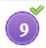

Please read the instructions carefully
General Instructions:
- Total duration of the examination is 210 minutes.
- Your clock will be set at the server. The countdown timer at the top right corner of screen will display the remaining time available for you to complete the examination. When the timer reaches zero, the examination will end by itself. You need not terminate the examination or submit your paper.
-
The Questions Palette displayed on the right side of screen will show the status of each question using one of the following symbols:
- You have not visited the question yet.
- You have visited the question but not answered the same.
- You have answered the question.
- You have NOT answered the question, but have marked the question for review.
-  You have answered the question, but marked it for review.
- You have not visited the question yet.
- The Marked for Review status for a question simply indicates that you would like to look at that question again. If a question is answered, but Marked for Review, then the answer will be considered for evaluation unless the status is modified by the candidate.
Navigating to a Question:
-
To answer a question, do the following:
- Click on the question number in the Question Palette at the right of your screen to go to that numbered question directly. Note that using this option does NOT save your answer to the current question.
- Click on Save & Next to save your answer for the current question and then go to the next question.
- Click on Mark for Review & Next to save your answer for the current question, mark it for review, and then go to the next question.
Answering a Question :
-
Procedure for answering a multiple choice type question:
- To select your answer, click on the button of one of the options.
- To deselect your chosen answer, click on the bubble of the chosen option again or click on the Clear Response button..
- To change your chosen answer, click on the bubble of another option.
- To save your answer, you MUST click on the Save & Next button.
- To mark the question for review, click on the Mark for Review & Next button. If an answer is selected for a question that is Marked for Review, that answer will be considered in the evaluation.
- To change your answer to a question that has already been answered, first select that question for answering and then follow the procedure for answering that type of question.
- Note that ONLY Questions for which answers are saved or marked for review after answering will be considered for evaluation.
Navigating through sections:
- Sections in this question paper are displayed on the top bar of the screen. Questions in a section can be viewed by clicking on the section name. The section you are currently viewing is highlighted.
- After clicking the Save & Next button on the last question for a section, you will automatically be taken to the first question of the next section.
- You can shuffle between tests and questions anytime during the examination as per your convenience only during the time stipulated Candidate can view the corresponding section summary as part of the legend that appears in every section above the question palette.
Read the following instructions carefully.
| Sr No. | Section Name | No. of Questions | Maximum Marks | Negative marks |
| 1 | Physics | 60 | 60 | 0.3333 |
| 2 | Chemistry | 60 | 60 | 0.3333 |
| 3 | Biology | 60 | 60 | 0.3333 |
| 4 | General Knowledge | 10 | 10 | 0.3333 |
| 5 | Aptitude & Logical Thinking | 10 | 10 | 0.3333 |
- Questions will be available in English.
- Your answers shall be updated and saved on a server periodically and also at the end of the examination.
- Each question will have four choices out of which only ONE is the correct answer. The candidate has to choose the correct answer by clicking on the radio button (o) placed before the choice.